Stage — Mairie de Bruay-la-Buissière
Administration systèmes et réseaux : interventions de maintenance, déploiement d'une solution de gestion de parc (GLPI) et réalisation d'une infrastructure réseau sécurisée, segmentée et supervisée.
- Période
- 7 avril – 10 juin 2026
- Service
- Service informatique (DSI)
- Superviseur
- Christophe Verhaeghe
La mission
Le service informatique de la Mairie de Bruay-la-Buissière souhaitait se doter d'un environnement de test sécurisé pour expérimenter la télémaintenance des équipements du parc informatique communal, sans exposer le réseau de production. Ma mission principale était de concevoir, déployer et documenter ce testbed, du câblage physique à la configuration logicielle.
La Direction des Systèmes d'Information gère l'ensemble du matériel informatique et des équipements réseau des services municipaux : le support aux agents via un système de tickets, les infrastructures réseau et serveurs (switchs, routeurs, pare-feu, téléphonie IP, serveurs de fichiers et d'applications) ainsi que l'installation et la maintenance des postes dans les différents bâtiments de la commune.
Ce que j'ai fait
01Pare-feu Stormshield SN210
Configuration des règles de filtrage, politique de sécurité périmétrique, zones réseau (LAN / WAN / DMZ), journalisation des flux.
02Segmentation VLANs 802.1Q
Découpage du testbed en VLANs distincts par rôle (administration, télémaintenance, production simulée), tags 802.1Q sur ports trunk.
03Windows Server 2022
Installation et configuration : Active Directory, DHCP, DNS pour le testbed. Création des comptes utilisateurs et des GPOs adaptées.
04Docker
Conteneurisation des services de télémaintenance. Déploiement avec Docker Compose pour une reproductibilité maximale de l'environnement.
05Télémaintenance avec Remotely
Déploiement et configuration de l'outil open source Remotely pour la prise en main à distance sécurisée des postes du testbed.
06Travaux terrain
Brassage de baies informatiques, tirage de câbles, installation et configuration de bornes Wi-Fi dans les bâtiments de la mairie.
Déroulé du stage, semaine par semaine
Les interventions de maintenance et le support aux agents ont rythmé les neuf semaines, en parallèle des trois projets techniques présentés plus bas.
Déploiement de postes mobiles et périphériques
Déploiement de PC et de routeurs 4G pour les élus : réinstallation complète de Windows via une clé USB bootable, configuration et cloisonnement de 4 sessions (1 administrateur et 3 utilisateurs avec mots de passe forts), paramétrage de l'APN des routeurs mobiles 4G et création de raccourcis vers le webmail Roundcube et l'outil iDélibre.
Maintenance matérielle et infrastructure physique
Remise en état d'une imprimante (nettoyage, pilotes, tests d'impression), configuration de VLANs sur un switch HP ProCurve 2824 pour isoler un système d'alarme, montage d'une baie de brassage, installation d'un bras articulé et d'une station d'accueil DisplayLink D3100.
Support utilisateur
Helpdesk de proximité : interventions de maintenance et traitement de tickets auprès des agents, dont le remplacement d'un pare-feu Stormshield dans une autre mairie.
Optimisation de câblage par éclatement de paires
Déplacement d'un équipement du VLAN Cinéma dans une salle équipée uniquement de prises du VLAN Orange. Pour éviter de tirer un nouveau câble, la prise existante a été optimisée avec deux doubleurs RJ45 : l'un regroupe les deux VLANs côté baie, l'autre sépare à nouveau les paires côté salle.
Support utilisateur
Configuration d'une borne Wi-Fi TP-Link Omada avec une adresse IP fixe, sans DHCP, ce qui a permis la mise en place d'un logiciel d'inventaire.
Support utilisateur
Maintenance courante et traitement de tickets d'assistance auprès des agents.
Sécurisation des données et des serveurs scolaires
Plan de sauvegarde : déplacements dans plusieurs écoles de la commune pour installer physiquement des clés de stockage dédiées aux sauvegardes sur les serveurs pédagogiques Kwartz.
Téléphonie IP et continuité des sauvegardes
Fin du déploiement des sauvegardes dans les écoles. Projet de téléphonie IP dans un cinéma : installation et raccordement de postes Cisco alimentés en PoE, vérification du démarrage et de la récupération DHCP, puis provisionnement des lignes sur la plateforme cloud Webex.
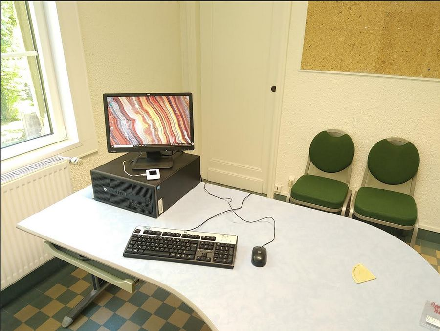
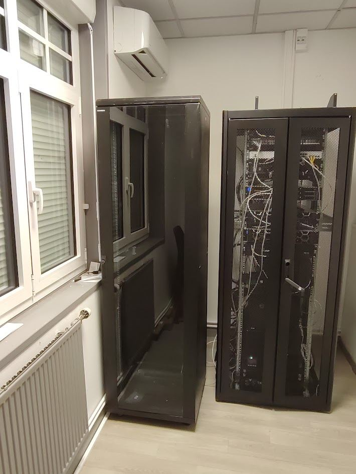
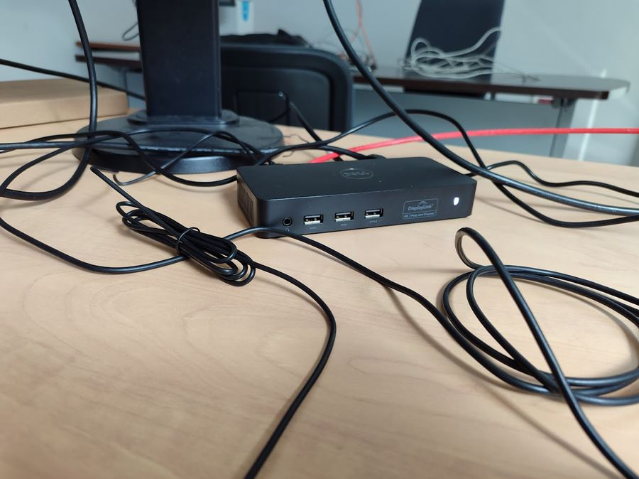
| Port du switch HP | VLAN 1 (gestion) | VLAN 10 (alarme) | VLAN 30 (futur) | Rôle |
|---|---|---|---|---|
| Port 1 | Exclu | Untagged | Exclu | Mode accès : centrale d'alarme |
| Ports 2 à 23 | Untagged | Exclu | Exclu | Mode accès : PC administratifs |
| Port 24 | Untagged | Tagged | Tagged | Mode trunk : liaison uplink vers le cœur de réseau |
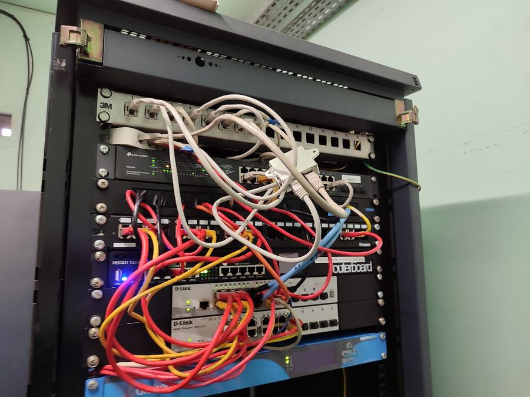
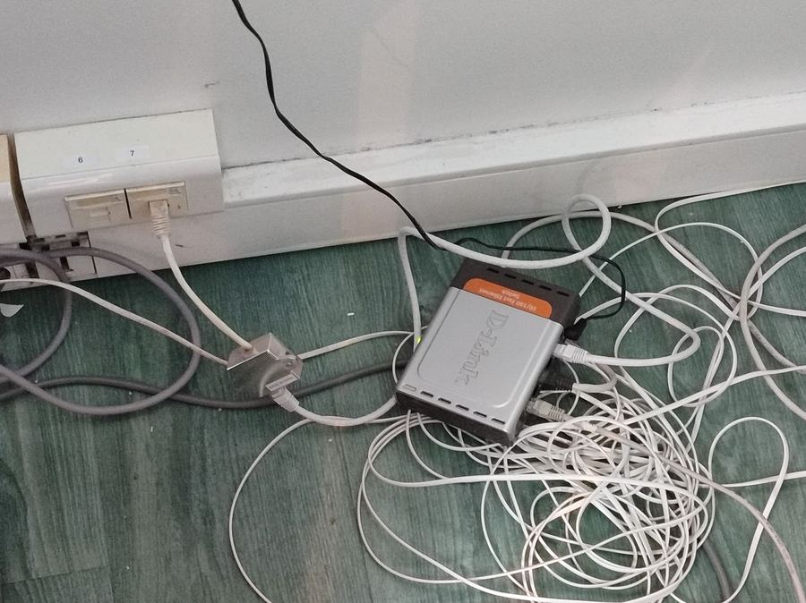
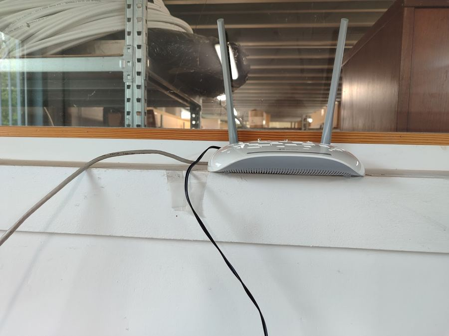
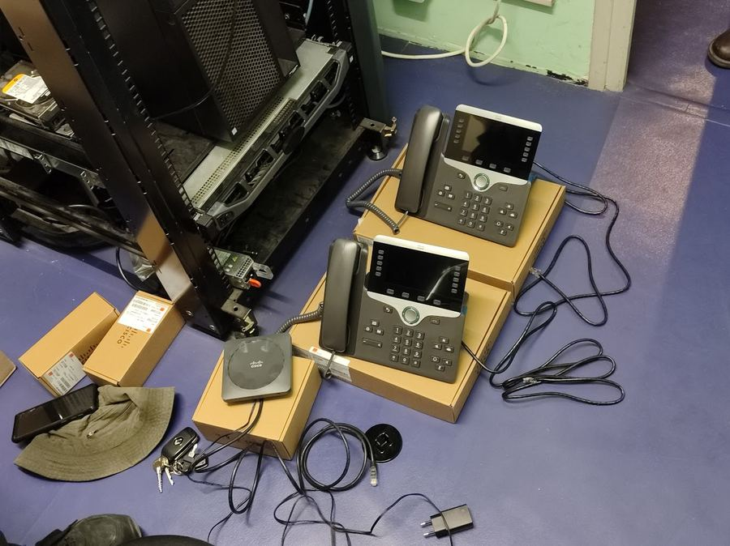
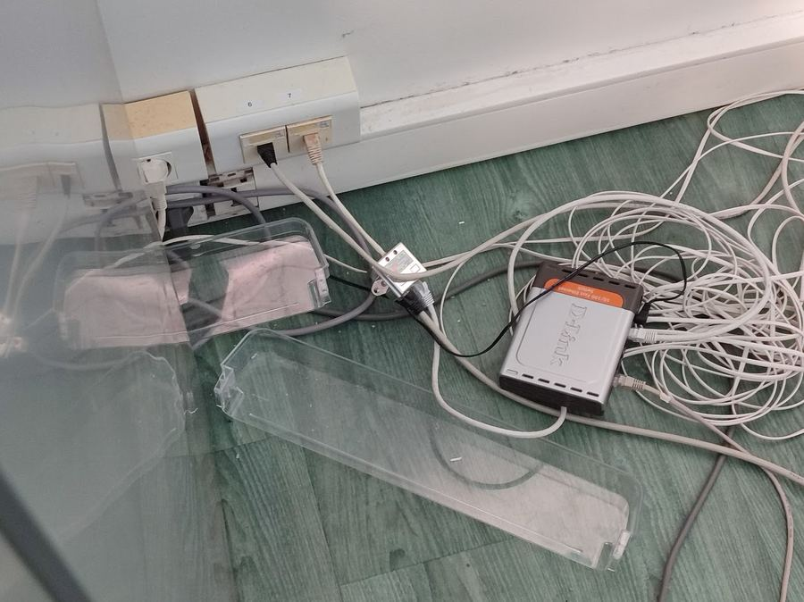
Gestion de parc et supervision
GLPI : gestion de parc et tickets
Pour comprendre le fonctionnement de l'outil déjà utilisé par la commune, j'ai installé ma propre plateforme GLPI sur Ubuntu 22.04.
- Pile logicielle : Apache2, PHP 8.4 en mode PHP-FPM via socket Unix, MariaDB, avec une base dédiée et un utilisateur aux droits limités.
- Sécurisation de la base avec le script d'installation sécurisée de MariaDB (suppression des accès anonymes, protection du compte root).
- Durcissement suivant les recommandations de GLPI : répertoires sensibles (config, files, marketplace) déplacés hors de la racine web, cookies de session en HttpOnly et SameSite=Lax.
- Finalisation par l'assistant web (vérification des prérequis, connexion à la base) puis prise en main des modules parc, assistance et administration.
Zabbix : métrologie et supervision
J'ai mis en place un serveur de supervision pour suivre en temps réel le processeur, la mémoire, l'espace disque et l'état des services.
- Machine virtuelle Ubuntu 22.04, base de données PostgreSQL dédiée, serveur web Nginx et PHP-FPM, services activés au démarrage.
- Résolution DNS locale par le fichier d'hôtes, puis finalisation par l'assistant web de Zabbix 6.0.
- Supervision classique en agent passif (le serveur interroge l'agent sur le port TCP 10050), puis en agent actif (l'agent envoie lui-même ses métriques).
- Déclaration d'un hôte avec le modèle officiel Linux by Zabbix agent, ce qui importe automatiquement sondes et seuils d'alerte.
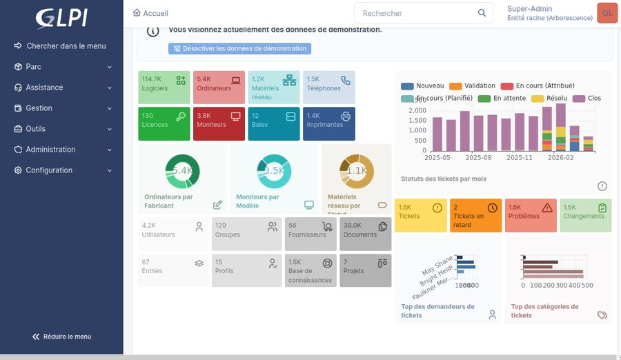
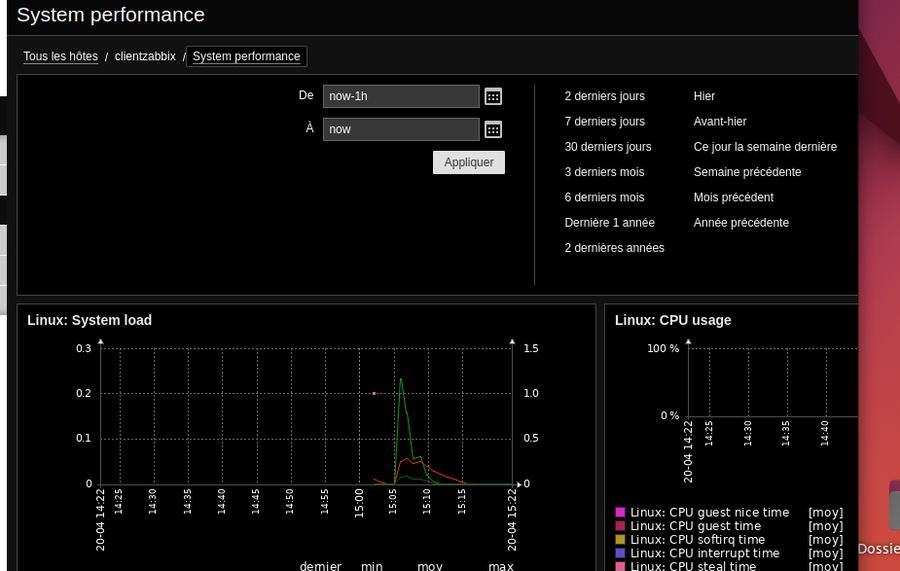
Infrastructure réseau sécurisée, segmentée et supervisée
Dans le cadre de mon stage, j'ai réalisé un projet visant à concevoir et à mettre en place une infrastructure réseau d'entreprise sécurisée. Le but principal était de permettre à des techniciens informatiques d'administrer des postes clients à distance grâce à la plateforme de téléassistance Remotely, installée dans une DMZ pour renforcer la sécurité du réseau.
Objectifs et principes de sécurité
- Séparer les réseaux : un incident sur un poste utilisateur ne doit pas atteindre les serveurs importants.
- Isoler les services critiques : le serveur accessible depuis l'extérieur est placé dans une DMZ.
- Limiter les flux : tout trafic non explicitement autorisé est bloqué.
- Centraliser l'authentification : les techniciens se connectent à Remotely avec leurs comptes Active Directory.
- Sécuriser les accès distants : chiffrement HTTPS et protection du serveur contre la force brute.
- Automatiser les déploiements : configuration des postes et installation de l'agent par stratégies de groupe.
Équipements et services mis en œuvre
- Pare-feu Stormshield SN210 (v4) et routeur 4G Huawei B535-235 pour l'accès Internet
- Switch manageable TP-Link Omada SG2428P
- Contrôleur de domaine Windows Server 2022 (Active Directory, DNS, DHCP, partages, impression, GPO)
- Serveur Ubuntu 22.04 en DMZ : Docker, Docker Compose, Nginx, fail2ban
- Plateforme Remotely avec authentification LDAP et chiffrement HTTPS
Architecture et plan d'adressage
Le réseau est organisé en trois zones séparées par le pare-feu. La zone LAN est elle-même divisée en deux VLANs, ce qui isole le réseau d'administration des postes utilisateurs.
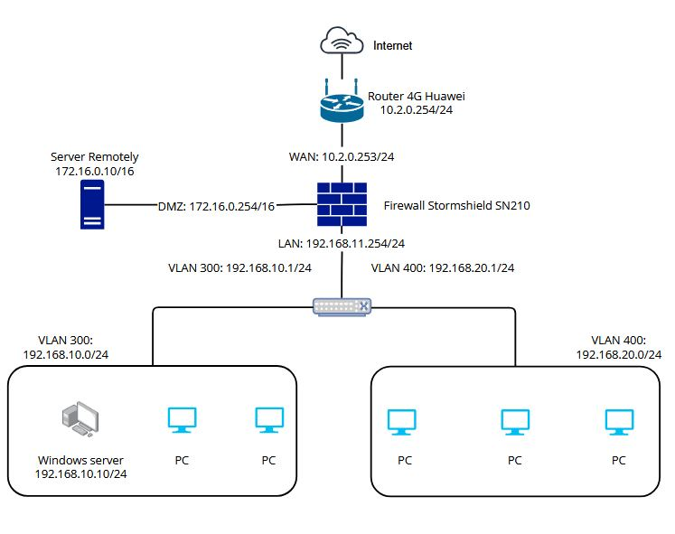
| Zone ou VLAN | Adressage | Contenu |
|---|---|---|
| WAN | 10.2.0.0/24 : routeur 4G en .254, interface WAN du pare-feu en .253 | Accès Internet par le routeur 4G Huawei |
| DMZ | 172.16.0.0/16 : interface du pare-feu en .254, serveur en .10 | Serveur Ubuntu hébergeant Remotely |
| LAN | 192.168.11.254/24 : interface LAN du pare-feu | Transit vers les VLANs, administration du pare-feu |
| VLAN 300 (compta) | 192.168.10.0/24 : passerelle .1, étendue DHCP de .100 à .200 | Contrôleur de domaine AD1 (192.168.10.10), postes d'administration et utilisateurs |
| VLAN 400 (RH) | 192.168.20.0/24 : passerelle .1, étendue DHCP de .100 à .200 | Postes utilisateurs et équipements publics |
1. Commutation : VLANs, trunk et PVID
Sur le switch TP-Link, j'ai créé les VLANs 300 et 400 depuis le menu L2 Features, puis affecté les ports : les ports 1 à 9 en untagged dans le VLAN 300, les ports 10 à 17 en untagged dans le VLAN 400, et le port 24, relié au pare-feu, en tagged pour former un trunk 802.1Q. Les PVID ont été réglés port par port pour associer automatiquement les trames non taguées au bon VLAN, ce qui évite les erreurs de VLAN et garantit le bon fonctionnement du DHCP. Une adresse IP de gestion (L3) permet d'administrer le switch depuis le réseau interne.
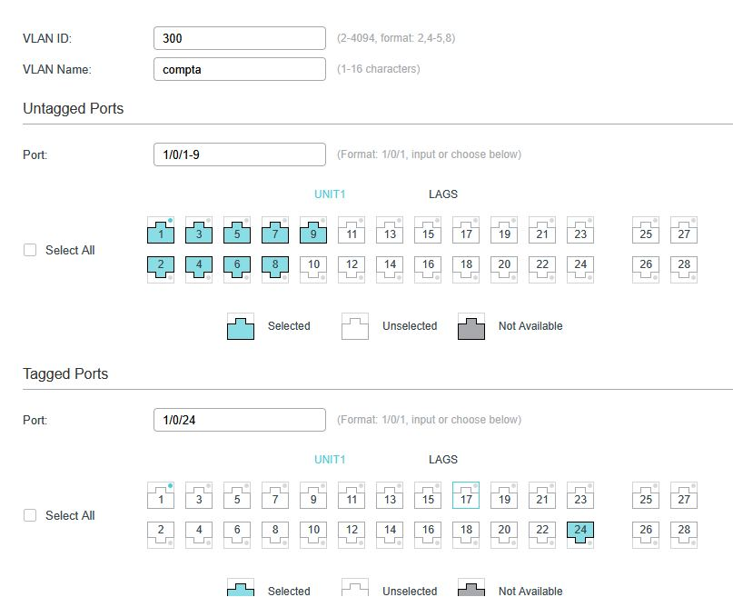
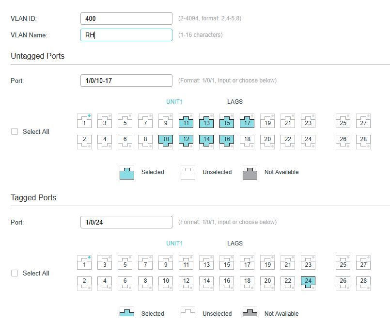
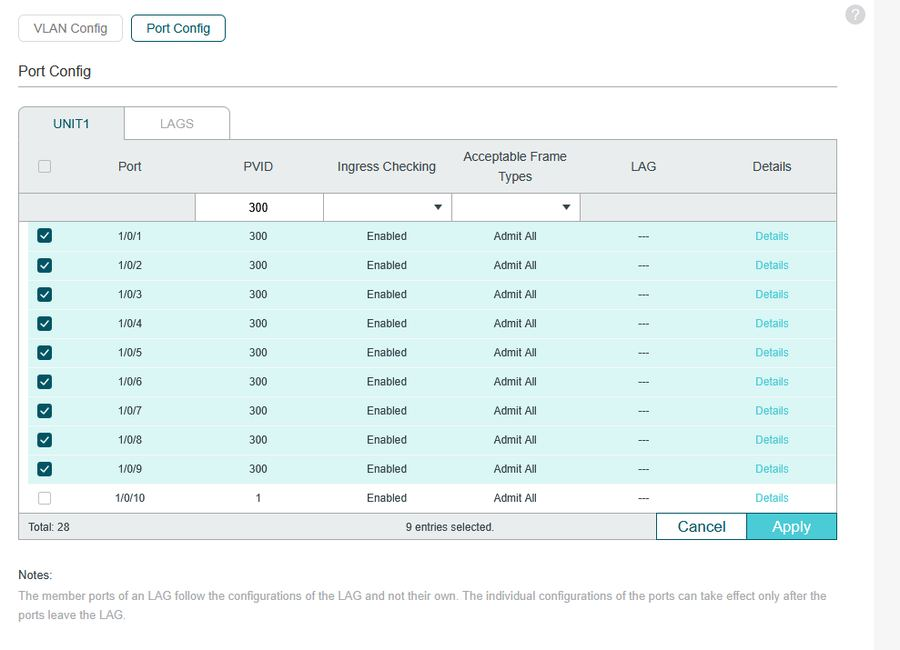
2. Pare-feu Stormshield SN210
J'ai d'abord sorti les interfaces du bridge par défaut, afin que le pare-feu fonctionne en routage et applique des règles indépendantes sur chaque zone : un bridge se comporte comme un simple switch, alors que le pare-feu devait contrôler les communications entre les réseaux. J'ai ensuite configuré les interfaces WAN, LAN et DMZ en adressage fixe, créé les deux interfaces VLAN 300 et 400 sur le LAN, puis modifié le mot de passe et le port d'écoute de l'administration.
La politique de filtrage suit le principe « tout flux non autorisé est bloqué ». Les douze règles autorisent uniquement les services nécessaires et se terminent par une règle de nettoyage.
| N° | Règle | Flux | Services |
|---|---|---|---|
| 1 | Accès administration | Réseau d'administration vers le pare-feu | https, ssh |
| 2 | Relais DHCP | VLANs 300 et 400 vers AD1 | bootps (UDP) |
| 3 | Retour DHCP | AD1 vers les clients des deux VLANs | bootpc (UDP) |
| 4 | DNS du serveur Remotely | Remotely vers AD1 | dns |
| 5 | Annuaire LDAP | Remotely vers AD1 | ldap, ldaps, dns |
| 6 | Services DNS et AD | VLANs 300 et 400 vers AD1 | dns, kerberos, ldap, microsoft-ds |
| 7 | Accès et agents Remotely | VLANs 300 et 400 vers Remotely | remotely, http, https |
| 8 | Diagnostic | VLANs 300 et 400 vers tout | icmp (ping) |
| 9 | DNS sortant | AD1 vers Internet | dns |
| 10 | Navigation des clients | VLANs 300 et 400 vers Internet | http, https |
| 11 | Sortie du serveur Remotely | Remotely vers Internet (installation, mises à jour) | http, https, dns |
| 12 | Règle de nettoyage | Tout vers tout | bloquer |
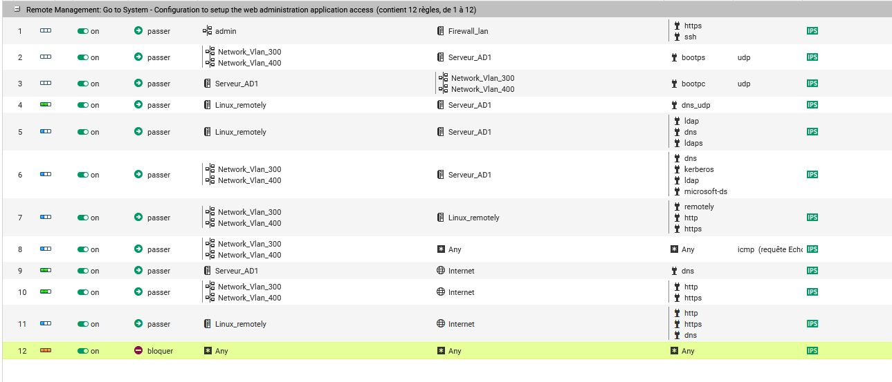
NAT
- NAT sortant pour les VLANs 300 et 400, vers Internet via l'adresse du pare-feu.
- NAT sortant pour le serveur Remotely situé en DMZ.
- NAT entrant (redirection de port) pour l'accès à Remotely sur le port 5000.
Relais DHCP et passerelle
- Le serveur DHCP étant sur le contrôleur de domaine, le Stormshield relaie les requêtes des VLANs 300 et 400 vers AD1.
- Une passerelle par défaut pointe vers le routeur 4G pour l'accès à Internet, le routage sortant et le NAT.
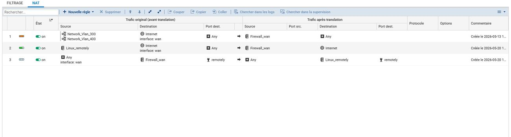
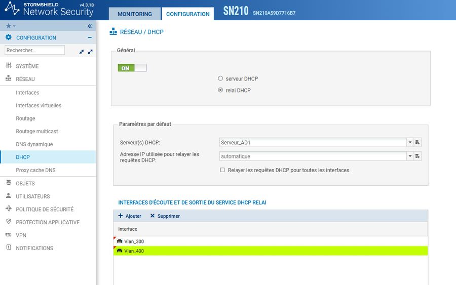
3. Accès Internet par routeur 4G
J'ai modifié l'adresse IP du routeur 4G Huawei pour qu'elle appartienne au même réseau que l'interface WAN du pare-feu, et désactivé son serveur DHCP afin d'éviter les conflits d'adressage. Pour éviter un double NAT et laisser le Stormshield gérer entièrement la sécurité, le pare-feu a été placé dans la DMZ du routeur.
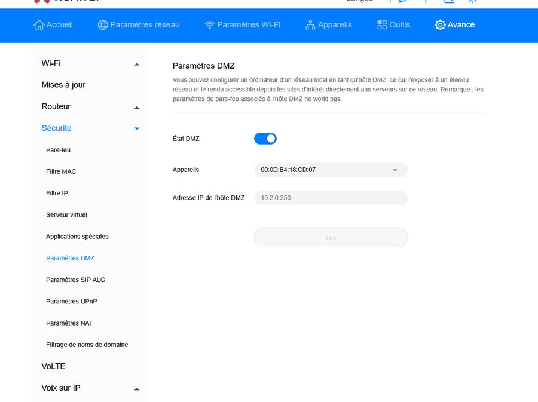
4. Contrôleur de domaine Windows Server (AD1)
Le serveur Windows Server 2022, en adresse IP statique, est le cœur de l'infrastructure. J'y ai installé le rôle AD DS pour créer le domaine monentreprise.local, le DNS s'y configurant automatiquement, avec des redirecteurs vers 8.8.8.8, 1.1.1.1 et le routeur 4G pour l'accès à Internet. Deux étendues DHCP ont été créées, une par VLAN, avec leur passerelle.
Organisation de l'annuaire
- Une OU principale SERVICES regroupant trois sous-OUs : Compta, RH et Sport, et une OU Groupes qui centralise les objets de sécurité.
- Trois utilisateurs créés par service, avec autorisation d'accès réseau dans l'onglet Appel entrant (prévue pour un contrôle d'accès 802.1X par un serveur NPS).
- Droits gérés par groupes de sécurité plutôt que par utilisateur (modèle AGDLP) : trois groupes par service, lecture seule (RO), lecture et écriture (RW) et contrôle total (FS). Un départ ou un changement de poste ne demande de modifier que l'appartenance au groupe.
Serveur de fichiers
- Arborescence de partages : Services (Compta, RH, Sport), Commun (lecture et écriture pour tous) et Numérisation (un dossier par utilisateur).
- Quotas avec le Gestionnaire de ressources du serveur de fichiers (FSRM) pour qu'un utilisateur ne remplisse pas le disque.
- Confidentialité du dossier Numérisation : héritage désactivé, droits explicites et énumération basée sur l'accès (ABE), qui masque les dossiers des collègues.
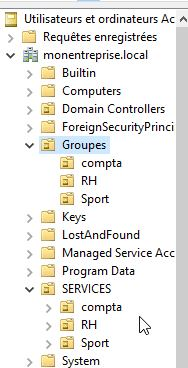
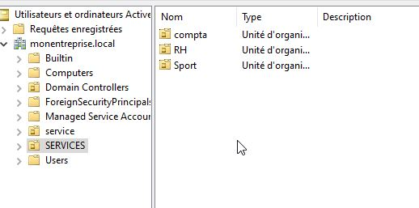
Automatisation du poste client par stratégies de groupe (GPO)
- Lecteurs réseau : mappage automatique à l'ouverture de session des lecteurs Z (Commun), S (Services) et N (Numérisation), avec des raccourcis sur le bureau.
- Imprimantes : serveur d'impression centralisé, puis déploiement par GPO avec ciblage au niveau de l'élément selon les groupes de sécurité, pour que chaque agent reçoive uniquement l'imprimante de son service.
- Fond d'écran et restrictions : fond d'écran imposé et non modifiable, accès au panneau de configuration, à l'invite de commandes et aux mises à jour automatiques interdit aux utilisateurs, avec exclusion du groupe des administrateurs du domaine par délégation.
- Déploiement de l'agent Remotely : script PowerShell d'installation, modifié pour pointer vers le serveur Remotely, déposé dans le dossier partagé NETLOGON et exécuté au démarrage des postes.
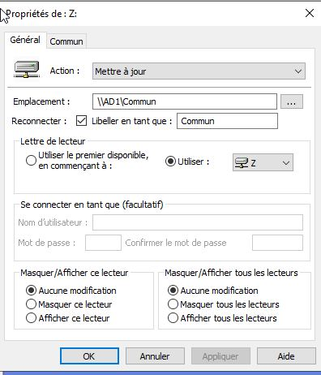
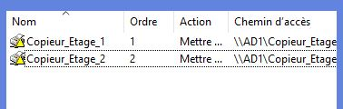
5. Téléassistance Remotely en DMZ
Le serveur Ubuntu 22.04, placé en DMZ, héberge Remotely dans un conteneur Docker. J'ai installé fail2ban pour bloquer automatiquement les adresses qui multiplient les échecs de connexion SSH.
Déploiement
- Docker et Docker Compose : un fichier docker-compose.yml définit le port (5000), les variables LDAP, les paramètres réseau et les volumes.
- Nginx en reverse proxy : redirection permanente du port 80 vers 443, certificat généré avec OpenSSL, protocoles limités à TLS 1.2 et TLS 1.3.
- Enregistrement DNS dans l'Active Directory pour joindre le serveur par son nom plutôt que par son adresse IP.
- Personnalisation de l'identité de la plateforme et création de groupes d'appareils.
Authentification LDAP
- Les techniciens utilisent leurs identifiants Windows : les comptes sont centralisés et les comptes locaux deviennent inutiles.
- Un compte de service dédié (svc_ldap_remotely) n'a que les permissions nécessaires à la lecture de l'annuaire, selon le principe du moindre privilège.
Résultat
- Les postes du domaine remontent automatiquement dans la console, ce qui permet les prises en main à distance et la supervision centralisée.
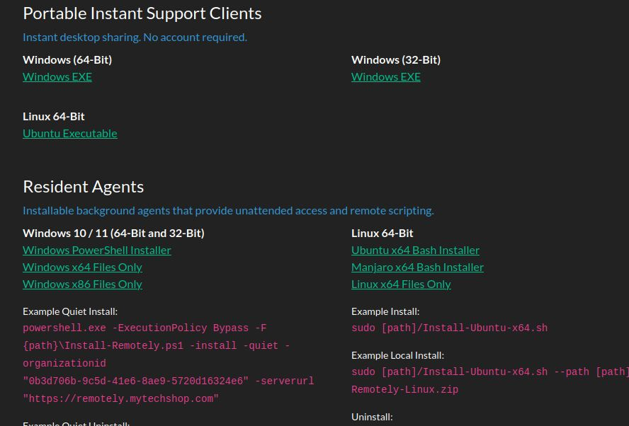
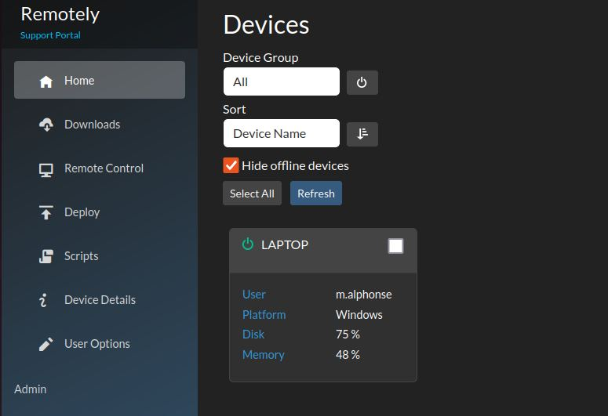
Difficultés rencontrées et solutions
Règles de filtrage sur Stormshield
Difficulté : je connaissais les ACL mais je ne les avais jamais configurées sur un pare-feu Stormshield avec interface graphique.
Solution : échanges avec le service informatique, lecture de la documentation Stormshield SNS v4 et plusieurs tests pour vérifier que Remotely accédait à Internet et aux ressources nécessaires sans bloquer le réseau.
Installation et sécurisation de GLPI
Difficulté : plusieurs alertes de sécurité apparaissaient à l'installation sur Ubuntu.
Solution : étude de la documentation officielle de GLPI pour comprendre l'origine des alertes (répertoires exposés, cookies de session) et appliquer les bonnes pratiques de durcissement.
Déploiement de l'agent par GPO
Difficulté : le déploiement ne fonctionnait pas, car Windows bloquait l'exécution des scripts PowerShell.
Solution : recherches et tutoriels sur l'exécution d'un script PowerShell au démarrage par GPO, puis activation du paramètre qui autorise l'exécution des scripts PowerShell en premier au démarrage.
Authentification LDAP de Remotely
Difficulté : notion jamais configurée auparavant, qu'il a fallu comprendre avant de l'appliquer.
Solution : tutoriels, documentation technique d'IT-Connect sur le protocole LDAP et discussions de la communauté GitHub de Remotely, puis plusieurs essais jusqu'à une authentification fonctionnelle.
Ces difficultés ont été résolues progressivement grâce à l'aide du service informatique, à la documentation officielle et aux tutoriels consultés. Cela m'a permis de gagner en autonomie et de progresser dans la résolution de problèmes techniques.
Compétences développées
Techniques
- Configuration de VLANs 802.1Q, trunk, PVID et filtrage réseau
- Pare-feu Stormshield : zones, politique de filtrage, NAT, relais DHCP, DMZ
- Administration Windows Server : Active Directory, DNS, DHCP, partages, quotas, impression et GPO
- Administration Linux : Ubuntu, Apache, Nginx, MariaDB, PostgreSQL, fail2ban
- Conteneurisation avec Docker et Docker Compose
- Supervision avec Zabbix et gestion de parc avec GLPI
- Chiffrement HTTPS et authentification centralisée LDAP
- Câblage, brassage, Wi-Fi et téléphonie IP
Transversales
- Autonomie : apprendre un outil nouveau à partir de la documentation officielle
- Rigueur : tester chaque configuration et documenter pour l'équipe
- Communication : échanger avec les utilisateurs et avec le service informatique
- Travail en équipe dans un service de collectivité
- Résolution de problèmes : identifier la cause réelle d'un blocage (par exemple une politique d'exécution de scripts)
- Respect des contraintes d'un service public : délais, budget, sécurité
Ressources utilisées
- IT-Connect : installer un contrôleur de domaine AD (Active Directory et DNS)
- IT-Connect : monter un lecteur réseau et ciblage par GPO
- IT-Connect : déploiement d'un logiciel MSI par GPO
- RDR-IT : exécuter un script PowerShell au démarrage par GPO
- IT-Connect : comprendre le protocole LDAP pour les débutants
- Remotely : discussion GitHub sur le déploiement de l'agent et dépôt officiel
- XAVKI : playlist de tutoriels Zabbix
- TECLIB : installation de GLPI
- Docker : référence du fichier Compose et Nginx : module proxy
- Stormshield : documentation SNS v4
- TP-Link : configuration des VLANs 802.1Q sur switchs L2 managés
- MariaDB : documentation officielle
Technologies utilisées
Ce que ce stage m'a apporté
Pratique terrain
Le brassage de baies et l'installation de bornes Wi-Fi m'ont confronté aux contraintes physiques d'un réseau réel — contraintes absentes des simulations en TP.
Exigences professionnelles
Documenter chaque configuration pour la transmettre à l'équipe DSI, respecter les délais, adapter les solutions aux contraintes d'une collectivité territoriale.
Stormshield en production
Premier contact avec un pare-feu professionnel certifié ANSSI, très différent des ASA Cisco de Packet Tracer — interface IPSN, politiques nommées, logs détaillés.
Culture collectivité
Comprendre les contraintes budgétaires et réglementaires propres aux services publics, notamment en termes de choix technologiques et de politique de sécurité.
Ce stage m'a permis de découvrir le fonctionnement réel d'un service informatique et d'avoir une meilleure vision de l'administration systèmes et réseaux. Il m'a conforté dans mon choix de poursuivre dans le domaine des réseaux et de la cybersécurité.